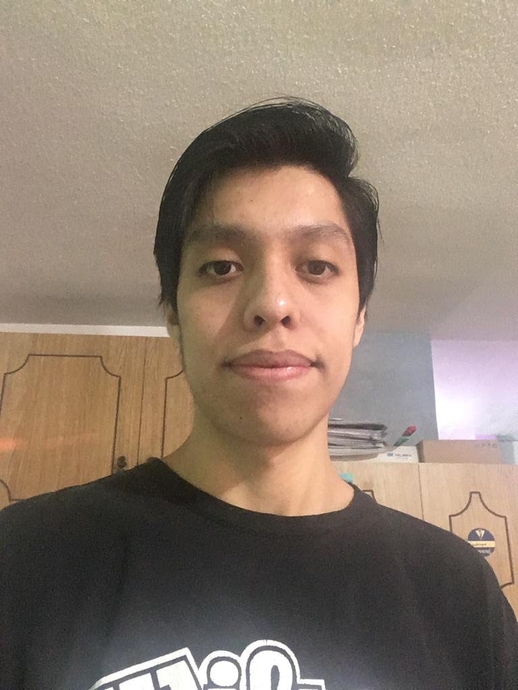

Armando Arzola Pérez
Calzada Ermita Iztapalapa, Barrio San Miguel, Iztapalapa, CDMX, Mexicano, armaarzolape@gmail.com
Datos Personales
Fecha de Nacimiento: 24 de Julio de 1998
Edad: 22 años
Lugar de Nacimiento: Nezahualcoyotl
Ocupación: Estudiante
Estado Civil: Soltero
Objetivo Profesional
Aportar mis conocimientos de matemáticas en el área de estadística, probabilidad y programación para el análisis e interpretación de datos de manera eficiente, así como enseñar la importancia de las matemáticas y la computación en la docencia e industria.
Formación Academica
Bachillerato: CCH-Oriente UNAM
Licenciatura(Estudiante): Matemáticas Facultad de Ciencias UNAM
Licenciatura(Estudiante): Computación UAM-Iztapalapa
Idioma
Inglés: Hablar:40%, escribir:35% y traducir:45%
Paquetería Informática
LATEX intermedio
R intermedio
Python: intermedio
Java: Basico
Excel,Word,Powerpoint: Avanzado
Competencias
Adaptabilidad, Comunicación, Trabajo en equipo, Tenacidad, Aprendizaje Continuo y crecimiento.
Área de Interés Laboral
Docencia, Estadística, Desarrollo de Software, Probabilidad, Programación, Finanzas .
Gustos Personales
Me gusta el baloncesto
Me gusta la natación
Me gusta ver anime y leer comics
Me gustan los juegos de mesa como el ajedrez y los videojuegos de celular